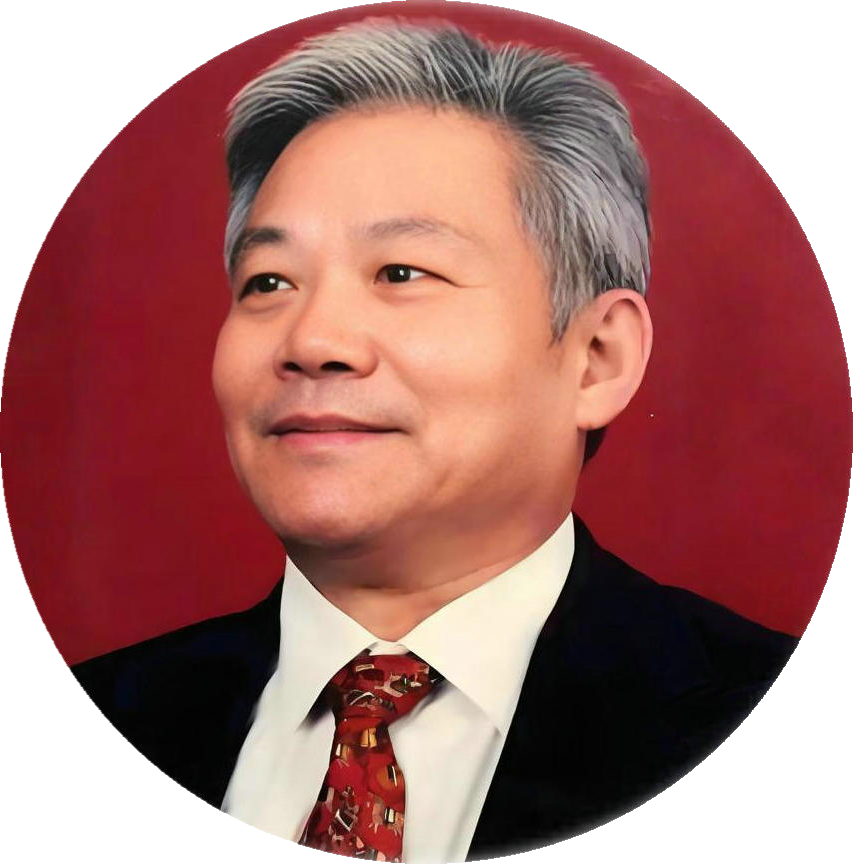

Poet · Calligrapher · Seal Carver · Cultural Envoy — Chairman of the East-West Artists Association, renowned as the "Envoy of East-West Art & Culture" and the "Haiku King". 诗人 · 书法家 · 篆刻家 · 文化使者 —— 东西方艺术家协会主席，被誉为“东西方艺术文化使者”与“俳王”。
Lou Deping, born in 1942 in Pizhou, Jiangsu, is a distinguished contemporary calligrapher, poet, seal-carver, professor and cultural activist. He serves as Chairman of the East-West Artists Association and holds nearly a hundred honorary titles across the international art world. He is called the "Envoy of East-West Art & Culture". 娄德平，1942年出生于江苏邳州，当代著名书画家、诗人、篆刻家、教授、社会文化活动家，现任东西方艺术家协会主席，集近百个头衔于一身，被称为“东西方艺术文化使者”。
Born into a family of poets and scholars, he went to Jixi, Heilongjiang at 15 and became a coal miner at 21. A neatly written leave note changed his fate — he became a propaganda officer and later one of Heilongjiang's youngest calligraphers and poets. After raising four children into artists (including world-renowned calligrapher Lou Zhenggang), he chose at seventy to "live for himself again" and devoted his heart to poetry. 他出身诗书世家，15岁北上黑龙江鸡西，21岁下井当煤矿工人；一张字迹工整的请假条改变命运，成为矿区宣传干部，后成为黑龙江年轻书法家、诗人。培养一子三女成才（长女娄正纲为世界著名书法艺术家）之后，古稀之年决定重新“为自己而活”，把余生献给了诗歌。
Born in Pizhou, Jiangsu, into a family of poets and scholars. The war years shaped a childhood of hardship.出生于江苏邳州诗书世家，战乱中度过艰辛童年。
At 15, left Xuzhou for Jixi, Heilongjiang, living with his elder brother who worked in the mines.15岁离开徐州，来到黑龙江鸡西投靠当矿工的兄嫂。
Became a coal miner himself. A neatly handwritten leave note so impressed his superiors that he was transferred to union propaganda work — his fine calligraphy made him famous in the mining district.下井当矿工；一张字迹工整的请假条改变命运，调任工会宣传干部，一笔好字在矿区出了名。
Became one of Heilongjiang's youngest calligraphers and poets. His poems about miners appeared in national newspapers and magazines; none were ever rejected.成为黑龙江年轻书法家和诗人，歌颂矿工的诗作登上全国报刊，“从来没有被退过稿”。
Set aside his own career to nurture his daughter Lou Zhenggang — becoming one of the earliest "Beijing drifters" — and raised all four children into accomplished artists, building a true "family of art".为培养女儿娄正纲搁置自己的事业，成为上世纪八十年代最早的“北漂”之一；四个孩子皆成才，造就真正的“艺术之家”。
Moved to New York with his wife Guo Dongpo and daughters, immersing himself in the city's art scene — and noticing how few Eastern works were shown there.移居纽约，与夫人郭东坡和女儿们团聚，深切感受纽约艺术氛围，也看到东方艺术在西方展出的稀少。
Founded the East-West Artists Association in New York to promote Chinese art internationally and mentor young artists — naming his study "Zhi En Tang" (Hall of Gratitude).在纽约创办东西方艺术家协会，致力于中西艺术交流、扶助青年艺术家；书房取名“知恩堂”。
Returned to poetry at seventy "to live for himself". His collection "Dialogue of Ice and Fire" was published by People's Literature Publishing House with 188 poems.古稀之年重拾诗笔“为自己而活”，人民文学出版社出版诗集《冰与火的对话》，收录诗作188首。
Devoted himself to haiku writing — more than 30,000 haiku to date — earning the titles "Haiku King" and "Giant Poet". His works are published worldwide in over ten languages.专注俳句创作，迄今已逾三万首，获“俳王”“巨匠诗人”等称号；著作以十余种语言在全球出版发行。
More than 2,000 free-verse poems since the 1970s, published in Poetry Monthly, People's Daily, Biography, Art Observation, The China Press (US) and Da Zhonghua (HK), among others. His imagery — "I will shout the sun out", "flying a kite with the Milky Way" — has been hailed as unforgettable in contemporary Chinese poetry.上世纪70年代开始发表诗作，累计创作自由体诗两千余首，散见《诗刊》《人民日报》《名人传记》《艺术观察》《侨报》（美国）《大中华》（香港）等报刊。“我要把太阳喊出来”“扯起银河放风筝”等意象被誉为当代诗坛难忘的文化记忆。
Over 30,000 haiku since 2016 — "a hundred years of Chinese poetry, the Haiku King is born" (critic Yang Siping). Sun, moon, stars, wind, thunder, rivers, flowers, birds, demons and immortals all dance through his seventeen syllables, fusing romanticism with heroism.2016年起开始创作俳句，迄今逾三万首，被誉为“百年汉诗，俳王出世”（评论家杨四平语）。日月星辰、风雨雷电、山河湖泊、人物花鸟尽在翻手覆云之间，浪漫主义与英雄主义相融，充满人生哲理与震撼力。
His monumental "One-Stroke Dragon" (一笔龙) absorbed the essence of master calligraphers — bold, unconstrained, and utterly original, capturing the divine spirit of the dragon. Works have won numerous awards and are collected by galleries and museums worldwide, including the Great Hall of the People, the Chairman Mao Memorial Hall and WHO offices.巨幅大字“一笔龙”吸取名家书道精髓，重传统而不拘泥，自成一格，将龙的神韵气势展现得淋漓尽致。书法作品获奖无数，为世界各地美术馆收藏，并为人民大会堂、毛泽东纪念堂、联合国卫生组织等海内外众多机构珍藏。
His poems have been translated into English, French, Japanese, Russian, German, Korean, Italian, Mongolian, Arabic and more; over 35 collections have been published overseas. His works are included in more than 30 anthologies at home and abroad.诗作被译成英、法、日、俄、德、韩、意、蒙、阿等十余种语言；海外出版著作35种；作品选入国内外三十余部典籍。
More than 60 collections of poetry and haiku published at home and abroad — among them: 在国内外出版诗集六十余部，代表作包括：
His haiku series continues to be published by People's Literature Publishing House, Huawen Publishing House, US Sun-Moon-Star Press, and New York Seal Press. 俳句系列还将由人民文学出版社、华文出版社、美国日月星出版社、纽约印社等中美出版社陆续出版。
Since the 1990s he has dedicated himself to promoting Chinese art worldwide. Through the East-West Artists Association he organized more than 100 international exhibitions in the US, France, Australia, Japan, Argentina, South Korea and Vietnam, including:上世纪90年代起致力于中国艺术国际交流推广，在美、法、澳、日、阿根廷、韩、越等国组织举办百余次国际交流展览活动，包括：
"A hundred years of Chinese poetry — and the Haiku King is born." — Yang Siping, one of China's top ten new poetry critics“百年汉诗，俳王出世。”——杨四平，中国十大诗歌新锐批评家之一
"His poems, long or short, soar between sun and moon, gallop above the stars, opening a vast cosmic vision brimming with life and imagination... His vigorous lines seem to punch a hole in the dim web of the earth." — Li Xiaoyu, Vice Chairman & Secretary-General, Chinese Poetry Society“他的诗不论长短，大多上天入地，驰骋于日月之间，纵横于星云之上，开合出宏阔的宇宙视野，充满生机和想象力；刚健的诗句似将朦胧的地球之网捅出一个洞。”——李小雨，中国诗歌学会副会长兼秘书长
"A wonder of the literary world — his haiku are the most important new achievement of China's new-style short poetry." — Xiao Xue, one of China's four great critics“题材广泛、内容丰富、想象奇丽、构思新巧的俳句，是新时代中华新体小诗的最新重要成果，是文艺界的奇人。”——晓雪，中国四大评论家之一